参考物料 · 完整范例Reference pack · worked example
这是 S01《守站》 的一套满配参考，给你看"开工前先备好 Reference"具体长什么样。四类参考各司其职：角色锁长相、场景锁空间、风格锁调性、镜头锁构图。守站全程是同一台机器——这正是 S01 的考点。A fully-prepared reference set for S01 "The Keeper", showing what "collect references before you start" actually looks like. Four kinds, each with a job: Character locks the look, Location the space, Style the tone, Shot the framing. The Keeper stays one consistent machine throughout — exactly what S01 tests.
锁定主角长相，跨镜头不跑形。琥珀独眼 / 磨损灰金属 / 履带底座 / 单机械臂——四个特征是这台机器的身份证。Locks the lead's look so it never drifts across shots. Amber eye / worn gunmetal / tracked base / single arm — the four traits that ARE this machine.
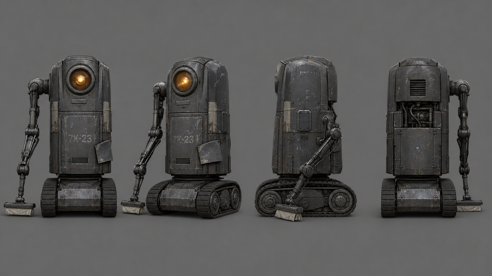
待生成PendingCharacter turnaround model sheet of THE KEEPER on neutral grey, even soft light, four views — front / three-quarter / side / back. Full body, tracked base, single amber lens, arm with squeegee, worn gunmetal. Clean reference-sheet look.
守站的角色转面定妆图，中性灰背景、均匀柔光，四视：正面 / 四分之三侧 / 正侧 / 背面。全身，露出履带底座、单只琥珀镜头眼、带软擦头的机械臂、磨损灰金属。干净的参考表风格。
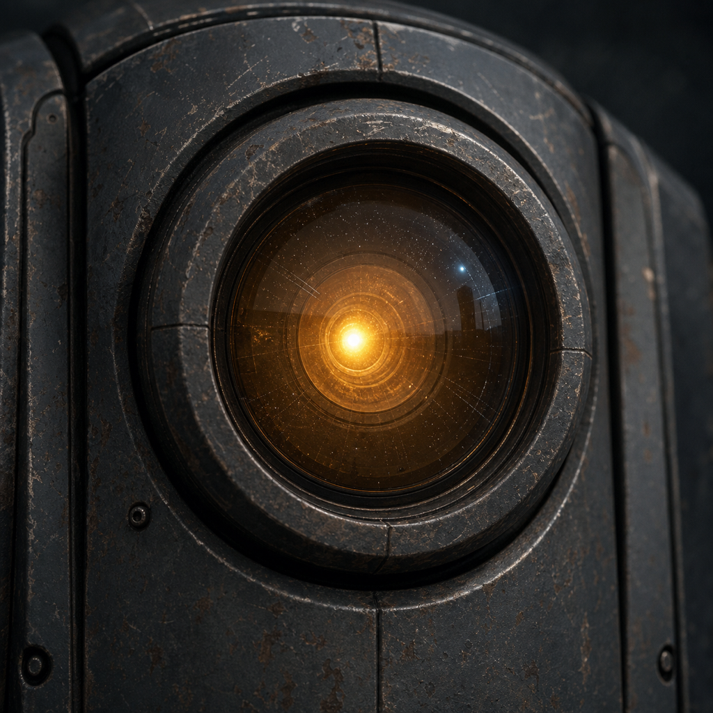
待生成PendingECU of THE KEEPER's single round lens glowing warm living amber; faint starfield + pale-blue dot reflected in the scratched glass; warm inner light. Hopeful, tender.
守站单只圆镜头的大特写，发出温暖、有生命感的琥珀光；刮花镜面上隐约映出星海与那颗淡蓝点；内部暖光。充满希望、温柔。
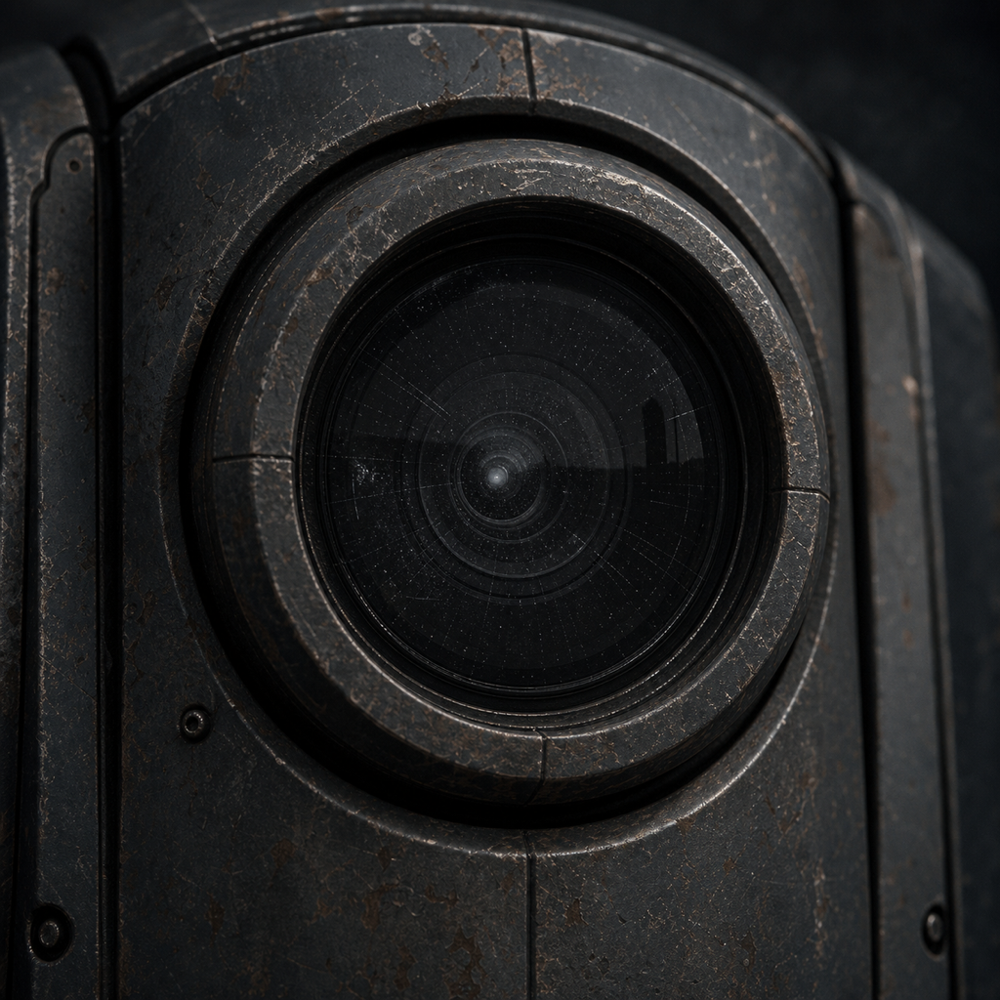
待生成PendingECU of the SAME lens, amber draining to cold dim grey, light almost gone, same scratches — only the light has died. Grief, resignation.
同一只镜头的大特写，琥珀光褪成冷暗的灰、几近熄灭，划痕一模一样——只是光死了。悲伤、认命。
Detail of THE KEEPER's single articulated arm — worn servos, cabling, soft cloth/squeegee tool, water streaks. Cold-blue ambient, warm rim light.
守站单条多关节机械臂细节——磨损舵机、线缆、软布/擦头工具、水痕。冷蓝环境光，暖色轮廓光。
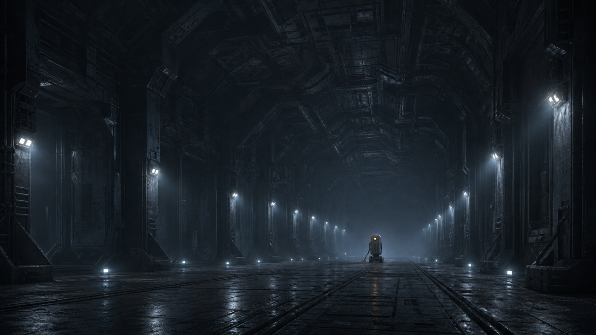
待生成PendingWIDE — THE KEEPER small and alone at the far end of a vast cold-blue corridor, dwarfed, work lights receding into dark. Loneliness.
大全景——守站渺小孤独地立在空旷冷蓝长廊尽头，被环境衬得极小，工作灯向黑暗退去。孤独。
锁定空间、布局、光线。三个核心场景：主长廊 / 发报舱 / 舷窗，外加结尾的"熄灭态"和那盏红灯。Locks space, layout, light. Three core sets — corridor / transmitter bay / porthole — plus the ending's dark variant and the red lamp.
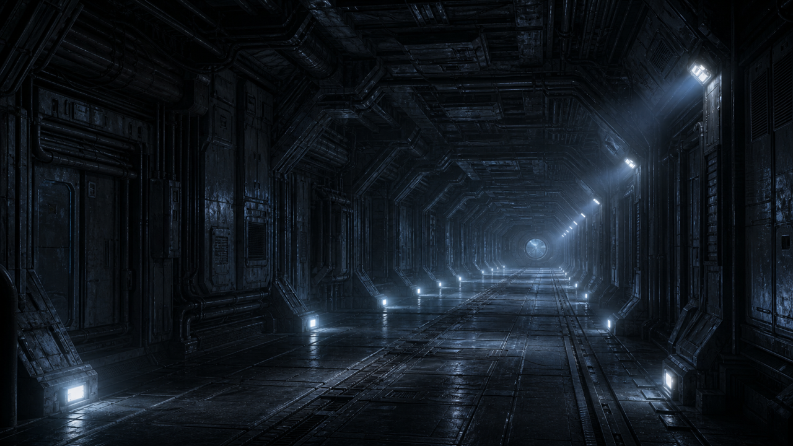
待生成PendingINT. main corridor — long cold-blue, work lights blinking on and receding to a vanishing point, volumetric haze, worn metal, a round porthole far down. Empty, vast. No characters.
内景·主长廊——狭长冷蓝，工作灯逐盏亮起并向消失点退去，体积雾，磨损金属，尽头一扇圆舷窗。空旷、宏大。无角色。
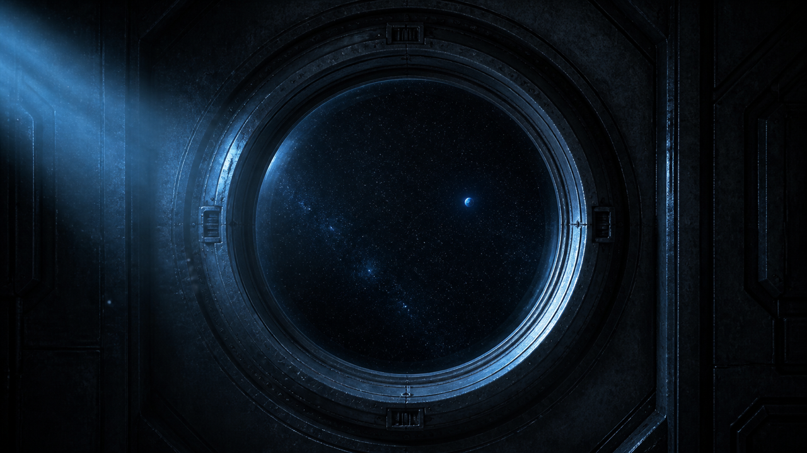
待生成PendingINT. a round porthole freshly wiped clean; deep star sea beyond, a single faint pale-blue dot far in the dark. Cold light, dust motes, lonely. No characters.
内景·一扇刚擦净的圆舷窗；窗外深邃星海，黑暗深处一颗淡蓝点。冷光、浮尘、孤独。无角色。
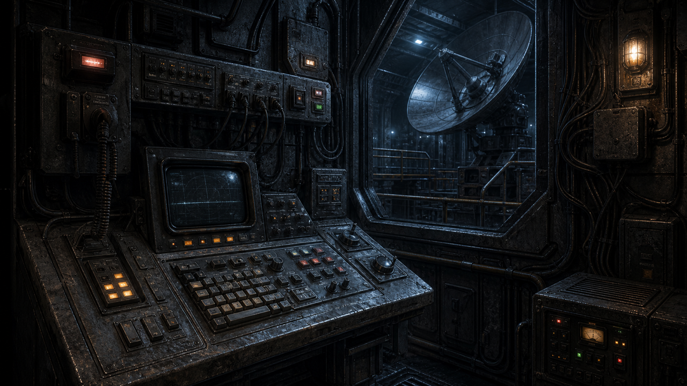
待生成PendingINT. transmitter bay — utilitarian console, physical keys, a small dim status screen, antenna cabling, indicator lights, worn metal. Cramped, lived-in. No characters.
内景·发报舱——功能化操作台、实体按键、一块昏暗的小状态屏、天线线缆、指示灯、磨损金属。逼仄、有使用痕迹。无角色。
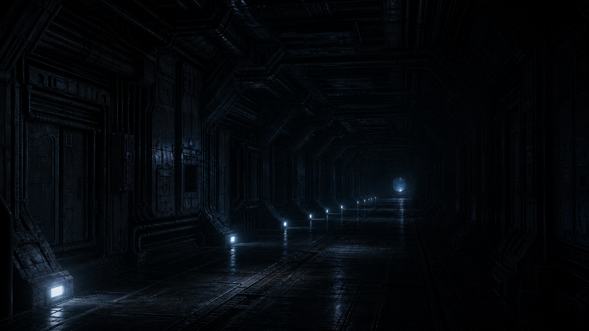
待生成PendingINT. the same corridor going dark — work lights switching OFF one by one front-to-back, deep shadow swallowing the space, a faint glow far away. Loss. No characters.
内景·同一条长廊正在熄灭——工作灯由近及远逐盏关闭，深影吞没空间，远处仅余一点微光。失去。无角色。
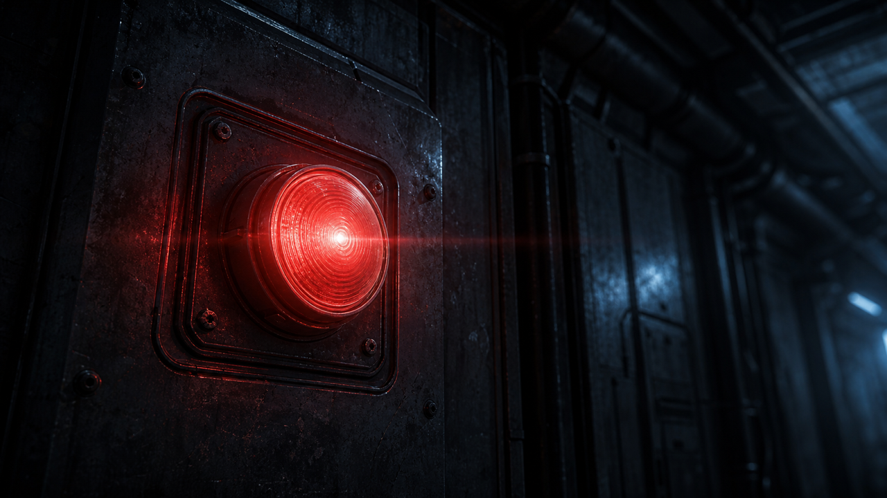
待生成PendingINT. a single red signal lamp on the corridor wall, lit red for the first time, glowing against cold-blue dark metal, slight flare. Tense, a false promise. No characters.
内景·长廊墙上一盏红色信号灯第一次亮起，在冷蓝暗金属上发红，轻微眩光。紧张、虚假的承诺。无角色。
锁定色彩、质感、调性。一句话：冷钢蓝打底，一抹活的暖琥珀是希望，去饱和冷灰是希望之死。Locks color, texture, tone. In one line: cold steel-blue base, one warm living amber for hope, desaturated grey for its death.
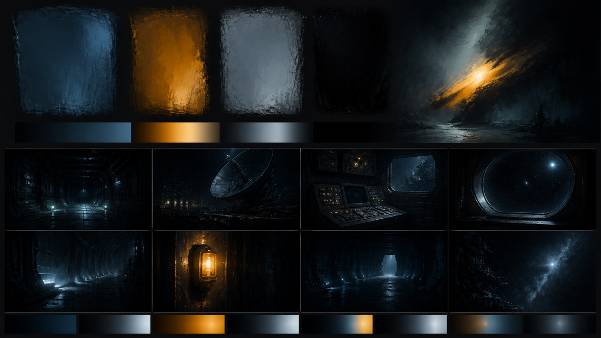
待生成PendingColor & light board — swatches of cold steel-blue (base), warm living amber (hope/the eye), desaturated cold grey (death), deep-space black; how amber reads against blue. Painterly mood board.
色彩与光板——色块：冷钢蓝（基调）、温暖鲜活的琥珀（希望/眼睛）、去饱和冷灰（死亡）、深空黑；展示琥珀在蓝中的呈现。绘画感情绪板。
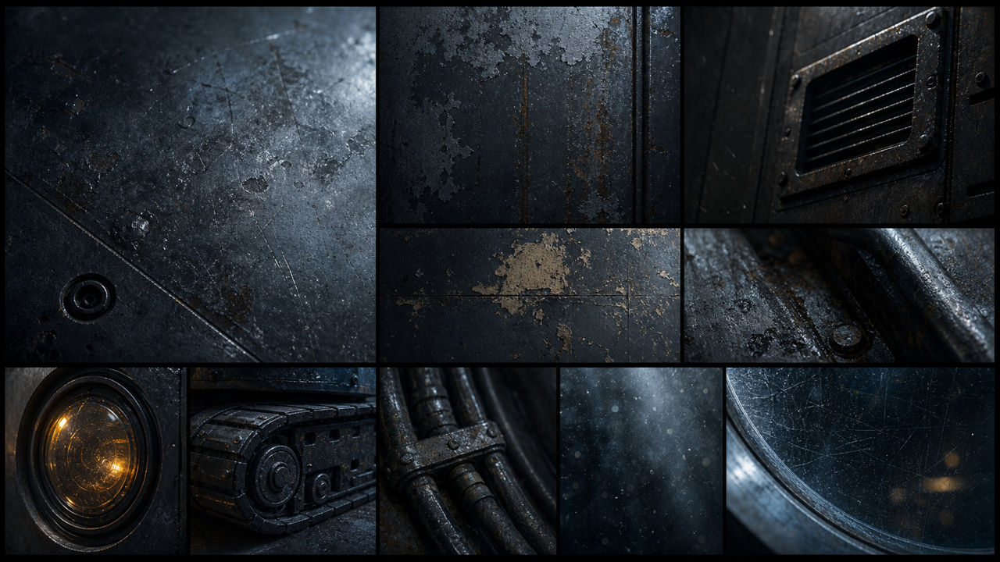
待生成PendingTexture board — worn scratched gunmetal, faded paint, faint rust, dust motes in volumetric beams, scratched glass. Tactile, decades of wear.
质感板——磨损刮花的灰金属、褪色漆面、淡淡锈迹、光束中的浮尘、刮花玻璃。可触感，几十年磨损。
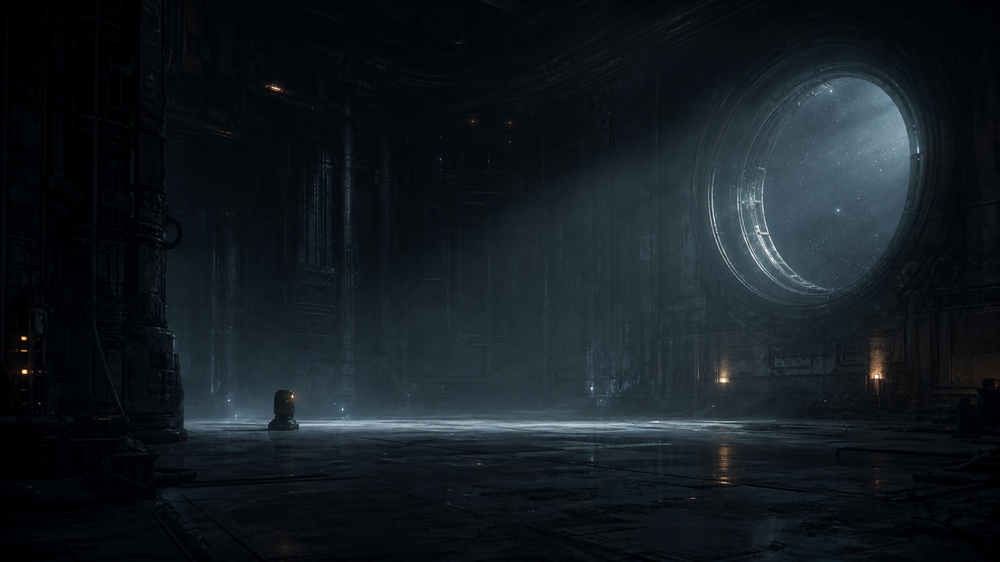
待生成PendingTonal mood frame — 'solitude and faded hope': a tiny lonely machine in vast cold quiet space, soft god-rays, deep shadow, film grain, painterly-realistic; quiet contemplative sci-fi.
调性情绪帧——「孤独与褪色的希望」：渺小孤独的机器置身空旷冷寂空间，柔和丁达尔光、深影、胶片颗粒，绘画写实；安静、沉思式科幻。
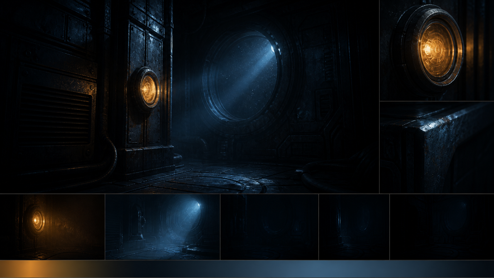
待生成PendingLighting key — low-key station interior: cold ambient blue fill, one small warm amber source (glowing lens) modeling the dark, rim light on worn metal, volumetric haze. Warm-vs-cold.
布光参考——低调（low-key）站内：冷蓝环境补光，一处小而暖的琥珀光源（发光镜头）在黑暗中塑形，磨损金属上的轮廓光，体积雾。冷暖对比。
锁定每个关键节拍的构图与机位语言。7 张对应剧本 7 个节拍——这是"剧本 → 画面"的脚手架。Locks the framing and camera language of each key beat. Seven frames for the seven beats — the scaffold from script to image.
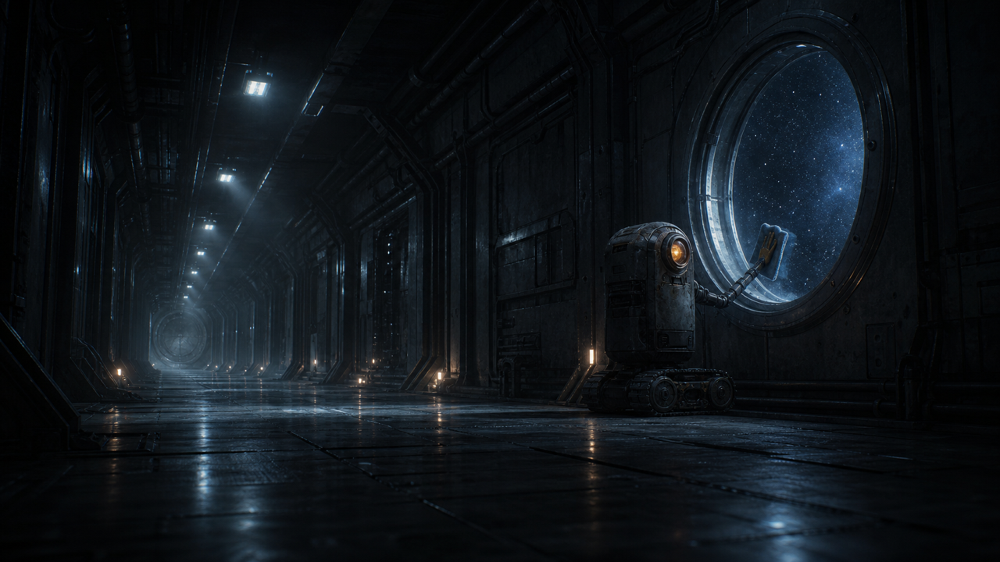
待生成PendingWIDE, low camera, slow dolly-in; work lights blink on; THE KEEPER rolls up from depth on tracks, arm wiping a porthole. Small, lonely routine.
大全景，低机位，缓慢推轨；工作灯逐盏亮起；守站踩履带从纵深驶来，机械臂擦舷窗。渺小、孤独的日常。
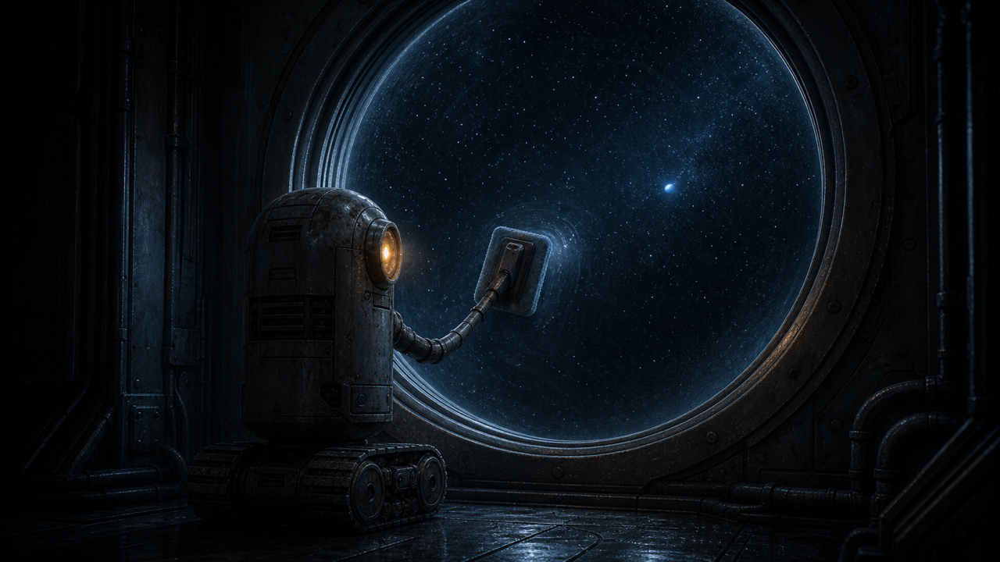
待生成PendingOver-the-shoulder from behind THE KEEPER toward the wiped porthole; star sea + faint blue dot; amber eye warm. Intimate, hopeful.
从守站背后越肩拍向擦净的舷窗；星海 + 淡蓝点；琥珀眼温暖。亲密、充满希望。
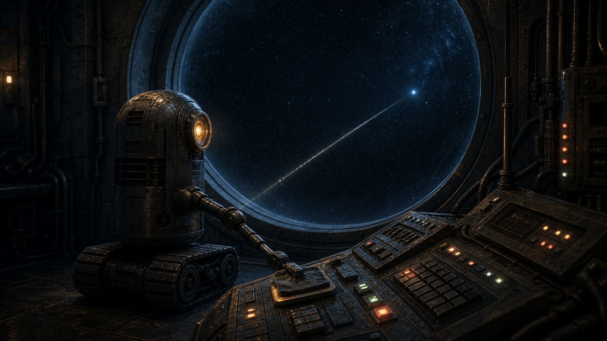
待生成PendingMEDIUM — the arm pressing a transmitter key, a thin signal leaving toward the dot; then the Keeper facing the porthole, motionless, waiting. Nothing returns.
中景——机械臂按下发报键，一束细信号朝蓝点飞去；随后守站面向舷窗、一动不动地等。什么都没回来。
The red lamp lit (insert), then THE KEEPER turning eagerly, tracks accelerating, amber eye bright with hope — it thinks it's a reply. Motion energy.
红灯亮起（插入），守站急切转身、履带加速，琥珀眼因希望而明亮——它以为是回信。带动感。
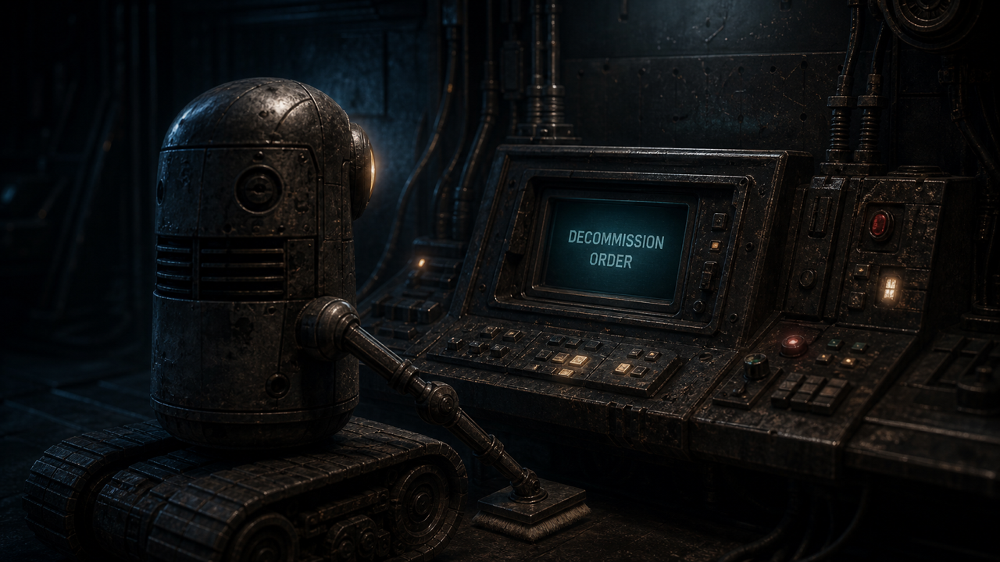
待生成PendingOTS / POV of THE KEEPER looking at the small screen showing a cold impersonal DECOMMISSION ORDER; the Keeper still and dwarfed.
越肩 / 主观视角，守站盯着小屏上冷冰冰、毫无人情味的「退役指令」；它静止、显得渺小。
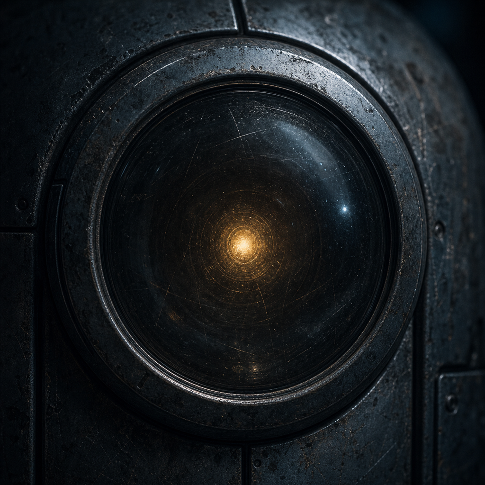
待生成PendingECU of the amber eye slowly cooling from warm amber to dim grey — hope dying. Held, tender, devastating.
琥珀眼大特写，从温暖琥珀缓缓冷却为暗灰——希望死去。长定格，温柔，催泪。
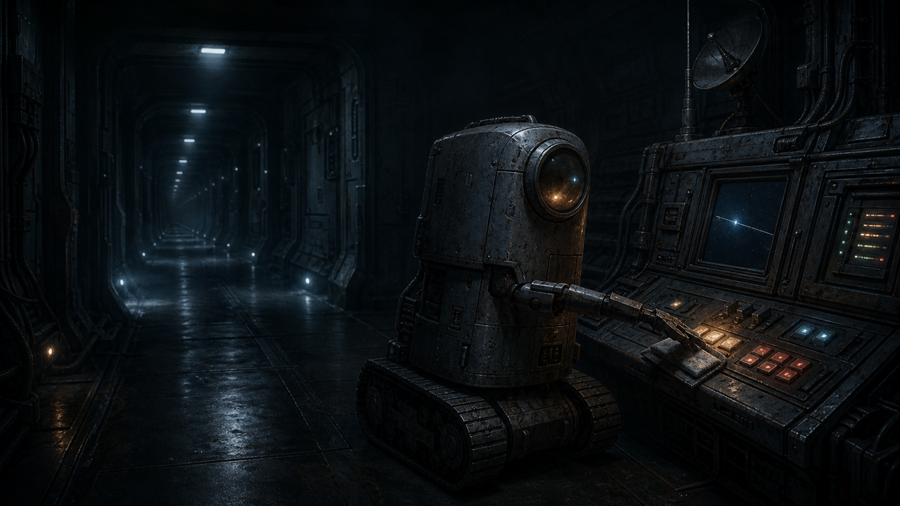
待生成PendingWIDE — THE KEEPER at the transmitter pressing the key a last time as corridor lights go out behind; final beat — the pale-blue dot reflected in the dimming amber eye, then black.
大全景——守站在发报台最后一次按键，身后长廊的灯逐一熄灭；末帧——淡蓝点映在渐暗的琥珀眼里，随后全黑。